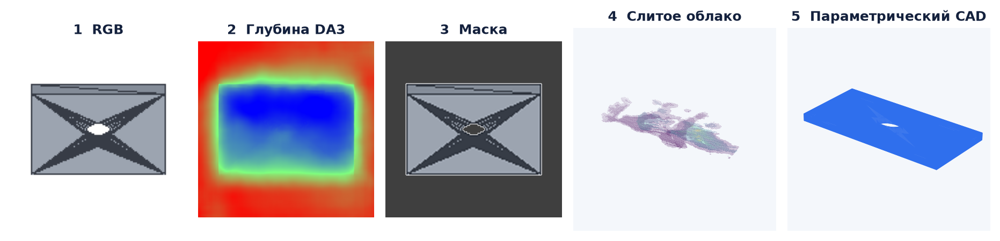
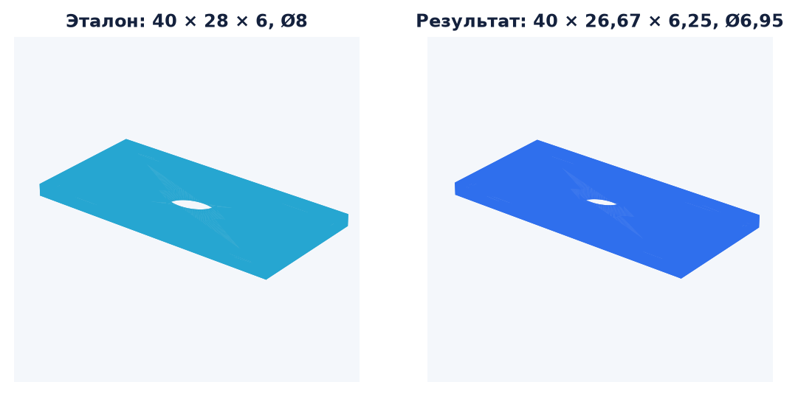

| Вход пользователя | Что делает DA3 | Что добавляет DA3-CAD | Что реально получается |
|---|---|---|---|
| 1 фотография | Оценивает глубину видимой поверхности, уверенность и одну камеру. | Строит частичную 3D-геометрию и может сгенерировать CAD-гипотезу. | Эксперимент. Скрытая сторона, толщина и масштаб неоднозначны. Результат нельзя считать точным обратным проектированием. |
| Серия фото обычно 8–16 видов |
Совместно оценивает глубины и относительные положения камер для всех кадров. | Отделяет объект, разворачивает пиксели в 3D, фильтрует и сливает виды, затем строит CAD. | model.py, STEP, STL, таблица параметров, quality/provenance и offline-viewer. Точность зависит прежде всего от камер и согласования масштаба глубин. |
| Видео неподвижный объект, движется камера |
Получает не видео целиком, а выбранные разнообразные кадры; может быть обусловлен камерами COLMAP. | Извлекает кадры, проверяет разнообразие, при возможности восстанавливает K/E; далее работает как с серией фото. | Тот же набор CAD-артефактов. Поворотный стол, где движется объект, текущим контрактом не поддержан. |
| Фото + маски + K/E | Использует внешние intrinsics/extrinsics вместо полностью свободной оценки поз. | Маски ограничивают объект; известные камеры делают многовидовое слияние устойчивее. | Более надёжное облако и CAD-гипотеза, но метрический масштаб всё ещё не появляется автоматически. |
| + известный размер например, ширина 40 мм |
Не использует этот размер: вывод DA3 остаётся без абсолютного масштаба. | После распознавания одноимённого CAD-параметра масштабирует всю модель и параметры. | Размеры в миллиметрах. Ссылка должна совпасть с именем параметра, например body_width=40mm. |
В inference не подаётся эталонный CAD. Он используется только отдельно для оценки качества. На RTX 5080 16 ГБ помещается DA3-LARGE; сегментация, visual hull и экспорт CadQuery/STEP выполняются на CPU.
| Поле | Смысл |
|---|---|
depth[N,H,W] | z-глубина каждого пикселя в системе соответствующей камеры. |
confidence[N,H,W] | Относительная надёжность; менее уверенные пиксели отбрасываются. |
intrinsics[N,3,3] | Матрица K: фокусные параметры и главная точка камеры. |
extrinsics[N,4,4] | Матрица E, интерпретируемая как world-to-camera. |
processed_images | Изображения после внутреннего ресайза и предобработки DA3. |
| № | Этап | Исполнитель | Результат этапа |
|---|---|---|---|
| 1 | Захват и подготовка | DA3-CAD | RGB-кадры, опционально маски и внешний пакет камер. |
| 2 | Any-view depth | DA3 | Глубины, confidence, K/E; глобальный масштаб может быть неизвестен. |
| 3 | 3D-развёртка и fusion | DA3-CAD | Единое фильтрованное облако в общей системе координат. |
| 4 | Канонизация | DA3-CAD | Ориентация, robust bbox, нормализация и отдельный масштабный канал. |
| 5 | Синтез CAD | DA3-CAD | Visual hull с depth carving или узкий геометрический шаблон. |
| 6 | Безопасная проверка | DA3-CAD | Запуск в ограниченном subprocess, требование ровно одного валидного solid. |
| 7 | Проверка и экспорт | DA3-CAD | Input Chamfer + multiview silhouette, STEP, STL, параметры и provenance. |
| Геометрия на одном rendered-срезе | Precision@0.05 | Что показывает |
|---|---|---|
| Непозированный DA3-LARGE | 0,2188 | Текущая свободная оценка. |
| Точные K/E рендера | 0,4297 | Почти двукратный рост от верных камер. |
| Точные K/E + GT-only scale/shift каждого вида | 0,6270 | Остаточная проблема — несогласованный масштаб глубин. |
Диагностика на 20 синтетических объектах, не метрика готового продукта. Последняя строка использует запрещённую для inference GT-коррекцию и нужна только для локализации причины ошибки.
body_width=40mm, детерминированный geometric fitter.
Эталонный STL не участвовал в реконструкции — только в последующей оценке.


Слева — эталон, справа — результат. Визуализация нормализована только для показа; таблица справа содержит метрические значения.
| Параметр | Эталон | CAD | Ошибка |
|---|---|---|---|
| Ширина* | 40,00 мм | 40,00 мм | ссылка |
| Глубина | 28,00 мм | 26,67 мм | −4,75% |
| Толщина | 6,00 мм | 6,25 мм | +4,09% |
| Диаметр отверстия | 8,00 мм | 6,95 мм | −13,13% |
| Смещение центра | 0,00 мм | 0,97 мм | +0,97 мм |
| Проверка формы | Результат |
|---|---|
| Manifold mesh IoU | 90,06% |
| Chamfer, squared ×1000 | 0,2817 |
| Валидность | 1 solid, watertight |
| CAD-шаблон | box + through-hole |
* Ширина задана пользователем и поэтому не является независимой оценкой точности.
| Режим | Сильная сторона | Текущая граница | Статус примера |
|---|---|---|---|
| Geometric fitter | Именованные инженерные параметры; воспроизводимый результат. | Только прямоугольные/круглые экструзии и круглые сквозные отверстия. | Да: IoU 90,06% |
| Visual hull | Произвольная грубая внешняя форма без category-specific CAD-весов. | Скрытые вогнутости заполняются; cuboid B-Rep не равен design history. | Да: интернет-видео, 1 watertight solid, input silhouette 85,27% |
model.py — редактируемый CadQuery;model.step, model.stl;parameters.json;quality.json, provenance.json;viewer.html и диагностические artefacts.